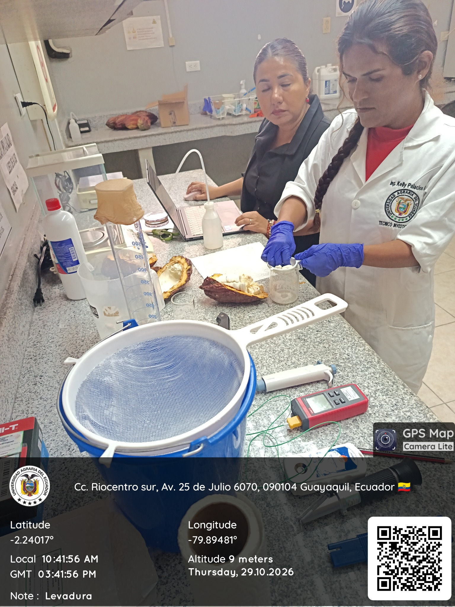
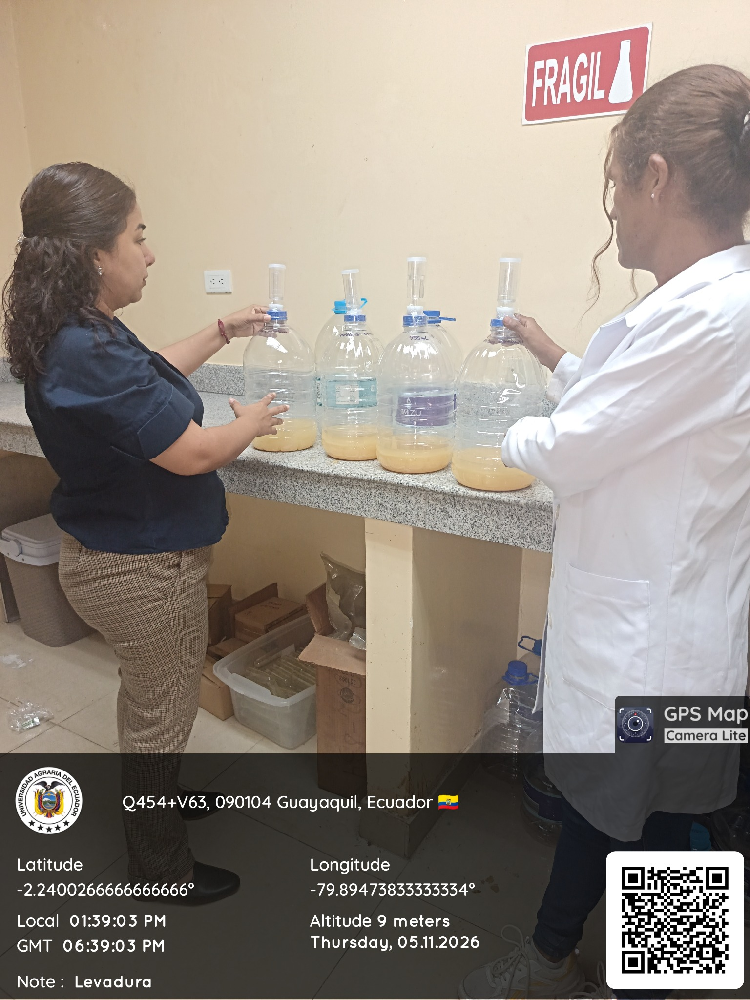
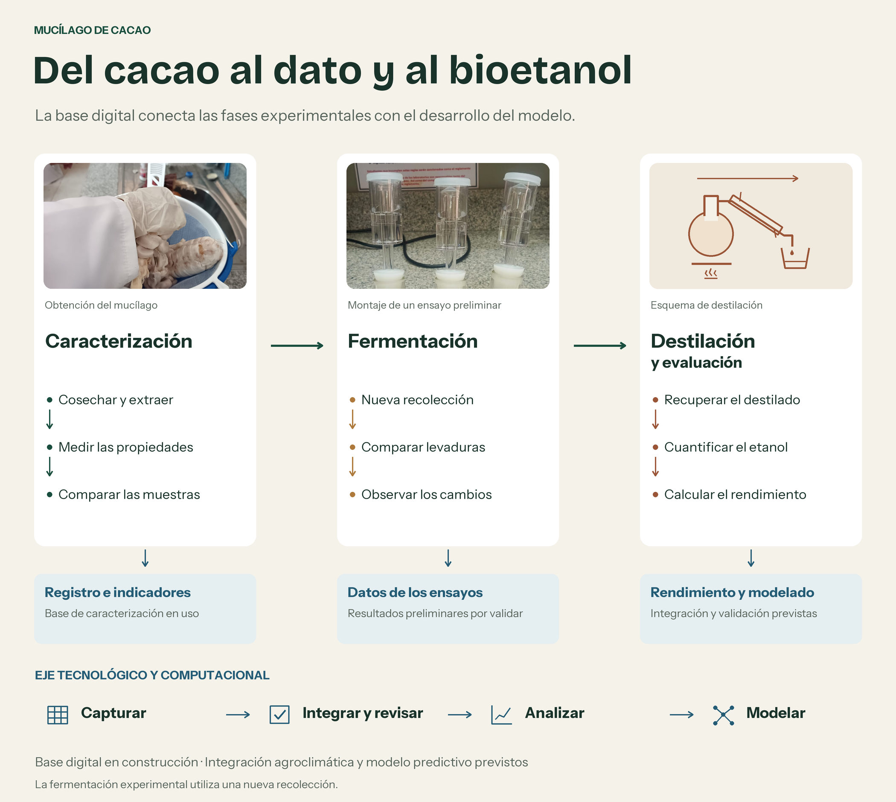
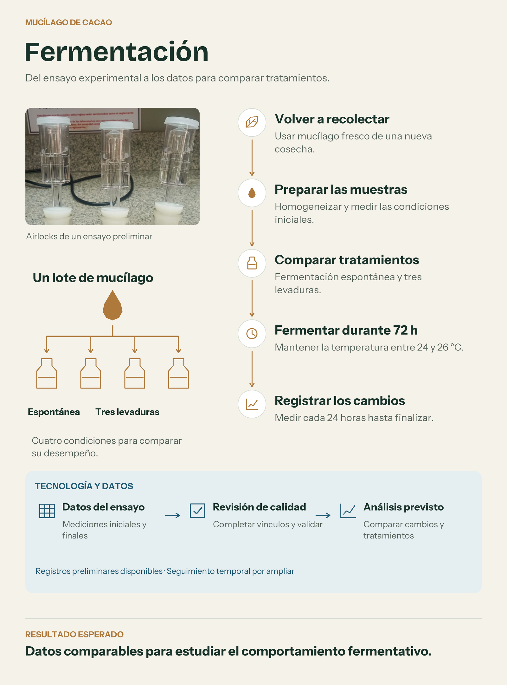

PROYECTO UAE · DESARROLLO E INNOVACIÓN TECNOLÓGICA
Del mucílago de cacao al modelo predictivo.
Integramos muestreo de campo, caracterización fisicoquímica, microbiología, fermentación y análisis computacional para estimar la producción de bioetanol según la variedad de cacao y las condiciones fermentativas.

AVANCE DEL FORMATO F
Un avance medible y trazable.
El porcentaje se calcula por actividades concluidas del cronograma: 15 de 41. No representa ejecución presupuestaria ni porcentaje ponderado por horas.
36,6%15 / 41 actividades
En ejecución
La fase de muestreo cerró su primera campaña.
Las fases 1 y 2 están concluidas. La actividad 3.1, primera campaña de recolección de mucílago, cuenta con evidencias de campo y laboratorio. La actividad 3.2 inicia el 15 de noviembre y corresponde al análisis fisicoquímico.
Dos haciendas mantienen muestreo complementario pendiente por condiciones climáticas; esto se registra como riesgo operativo y no invalida las evidencias ya obtenidas.
LABORATORIO
La evidencia experimental alimenta los datos.
Las actividades actuales consolidan variables de materia prima, condiciones de cultivo y respuesta fermentativa que posteriormente serán integradas en la base de datos del proyecto.

RESULTADOS PRELIMINARES A 120 HORAS
Respuesta fermentativa observada
Los valores son registros preliminares y permanecen sujetos a validación. No se presentan como resultados definitivos del experimento formal.
EJE TECNOLÓGICO
El producto final es un sistema de predicción, no solo un ensayo de laboratorio.
La tecnología conecta las evidencias de campo y laboratorio con una base de datos estructurada, procesamiento científico en Python y modelos de aprendizaje automático.
Campo y clima
Finca, variedad, lote, fecha, ubicación, temperatura, precipitación y humedad relativa.
Laboratorio
pH, °Brix, densidad, volumen, azúcares, acidez, condiciones de fermentación y etanol.
Base estructurada
Trazabilidad por muestra y ensayo, normalización, control de calidad y diccionario de variables.
Python y analítica
pandas, NumPy, visualización, estadística descriptiva, correlaciones y preparación de datos.
Machine learning
Regresión, Random Forest y XGBoost con validación cruzada y métricas R², RMSE y MAE.
Panel web
Consulta de escenarios y visualización del rendimiento estimado de bioetanol.
Disponible ahora
Plantillas de registro, estructura de datos y captura de información de campo y laboratorio.
En consolidación
Integración de nuevos datos fisicoquímicos, fermentativos y agroclimáticos.
Programado
Modelado predictivo y panel web en las fases 5 y 6 del Formato F.


RIESGO CLIMÁTICO · EL NIÑO
El clima puede modificar el ritmo del muestreo, no el objetivo del proyecto.
Evaluación operativa del proyecto a partir de información oficial disponible al 11 de noviembre de 2026.
Segunda campaña: 15 ene. – 28 feb. 2027
El último seguimiento localizado del INAMHI mantiene a El Niño activo y en fortalecimiento. Para el Litoral se han reportado períodos de lluvias más recurrentes, y NOAA mantiene una probabilidad superior al 83% de un evento fuerte a muy fuerte hasta enero–marzo de 2027.
Esta clasificación de riesgo es una evaluación del proyecto. No implica que todas las fincas sufrirán afectaciones ni que cada jornada tendrá lluvias intensas.
Prever ventanas flexibles de visita y priorizar sectores con accesibilidad segura.
Reducir el tiempo entre recolección, transporte, extracción y caracterización.
Separar actividades de campo de tareas de laboratorio para mantener avance cuando existan restricciones de movilidad.
Integrar precipitación, temperatura y humedad como variables explicativas del sistema predictivo.
EVIDENCIAS
Campo, laboratorio y registro digital.
Fotografías de actividades realizadas durante octubre y noviembre de 2026. Algunas imágenes conservan el sello GPS del registro original.
CRONOGRAMA
Estado de las seis fases.
Resumen por actividades concluidas. Las fases futuras permanecen sin iniciar según el Formato F.
Revisión y diseño metodológico
10 / 10 · 100%Revisión bibliográfica, variables, protocolo, base experimental y coordinación.
Información secundaria y unidades
4 / 4 · 100%Agroclima, zonas, variedades, registros productivos y control de calidad.
Muestreo y caracterización
1 / 5 · 20%Primera campaña cerrada. Análisis fisicoquímico inicia el 15 de noviembre de 2026.
Fermentación controlada
0 / 6Inicio formal previsto para abril de 2027.
Base de datos y procesamiento
0 / 5Normalización, depuración, análisis exploratorio y preprocesamiento.
Modelo, sistema y publicaciones
0 / 11Modelos, validación, escenarios, dashboard, sistema web y productos científicos.